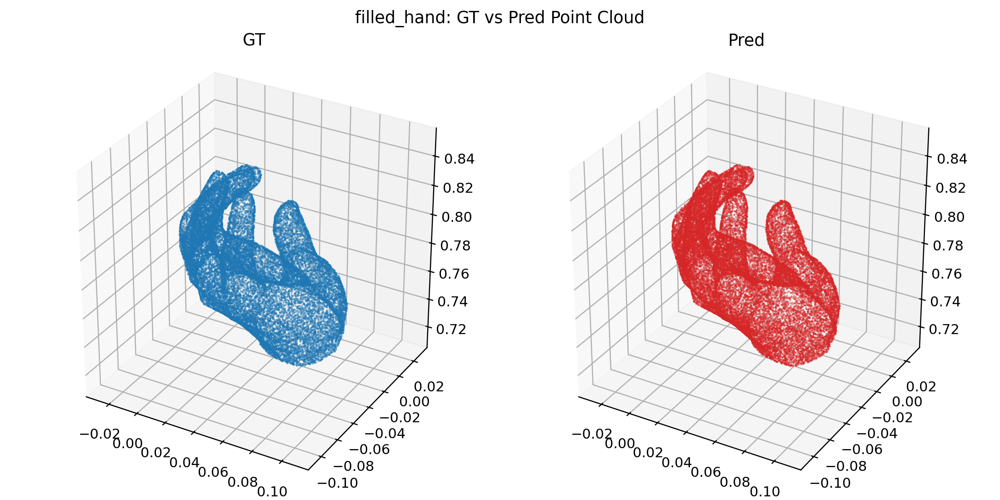
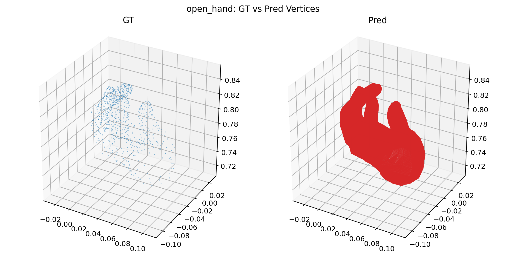

HOI3R experiment publish node
PASS
Dexycb Frame30 Hand Fillholes
experiment completed and showed that making the hand GT mesh watertight does not materially reduce the sparse voxel density or the decoded hand mesh explosion. Important caveat: this rerun gives `178k` open-hand predicted vertices from the same GT mesh, contradicting the earlier `1.37M` isolated record; prior isolated hand numbers should be treated as suspect until rerun
Context
Experiment goal
验证 hand GT mesh 的 wrist opening 是否是导致 TRELLIS.2 shape roundtrip 异常的主因。对同一帧 hand mesh 分别保留 open surface 与使用官方 `Mesh.fill_holes(max_hole_perimeter=1.0)` 封腕后的 watertight 版本，再走同一条 official `normalize -> mesh_to_flexible_dual_grid -> shared encoder -> shared decoder` 路径。
Conclusion
experiment completed and showed that making the hand GT mesh watertight does not materially reduce the sparse voxel density or the decoded hand mesh explosion. Important caveat: this rerun gives `178k` open-hand predicted vertices from the same GT mesh, contradicting the earlier `1.37M` isolated record; prior isolated hand numbers should be treated as suspect until rerun
Visual Evidence

Pointcloud Compare
Experiment artifact mirrored into the public asset bundle.
Vertex Compare
Experiment artifact mirrored into the public asset bundle.
Pointcloud Compare
Experiment artifact mirrored into the public asset bundle.

Vertex Compare
Experiment artifact mirrored into the public asset bundle.